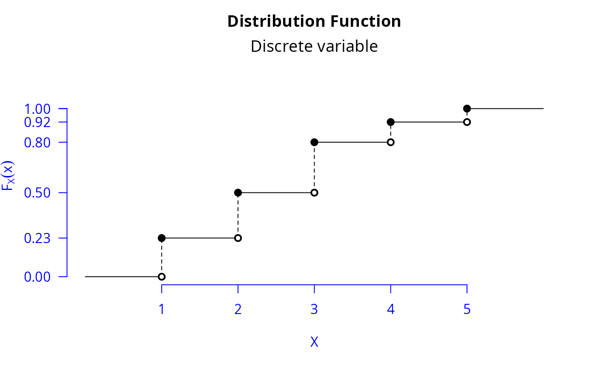

Plot of cumulative distribution function of any discrete variable
Source:R/anypfcdfdiscrete.R
cdfd.RdHelp in building the plot of the cumulative distribution function of any discrete variable
Details
Consider the \(X\) distribution:
| \(p_X(x)\): | 0.23 | 0.27 | 0.30 | 0.12 | 0.08 |
| \(x\): | 1 | 2 | 3 | 4 | 5 |
where \(p_X(x)\) and \(x\) are probability function and values of \(X\). Consider also the \(X\) distribution function:
$$ F_X(x) = \left\{\begin{array}{ll} 0, & \textrm{if } x < 1;\\ 0.23, & \textrm{if } 1 \leq x < 2;\\ 0.50, & \textrm{if } 2 \leq x < 3;\\ 0.80, & \textrm{if } 3 \leq x < 4;\\ 0.92, & \textrm{if } 4 \leq x < 5;\\ 1.00 & \textrm{if } x \geq 5.\\ \end{array}\right. $$
This way, the cdfd function needs to consider only the vectors x <- 1:5 and
fda <- c(0.23, 0.50, 0.80, 0.92, 1), that is, only the equality conditions for \(x\). See Example 1.
Examples
# Example 1
x <- 1:5
fda <- c(0.23, 0.5, 0.8, 0.92, 1)
cdfd(x, fda)
